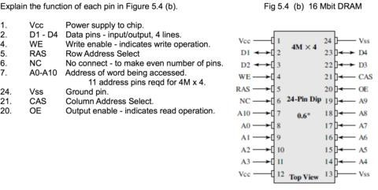

Tugas 1
Computer Specification :
Computer Name : DESTKOP-JHA76DL
Computer Type : Hp 15-ba004ax
Computer OS : Windows 10 Enterprise 64-bit(10.0,build 17134)
Computer CPU : AMD A10-9600P RADEON R5, 10 COMPUTE CORES 4C+6G(4CPUs),~2,4GHz
CPU Technology: 28 nm
Memory : 8192MB RAM
Cache Analysis :
| No | Parameter | Analysis |
|---|---|---|
| 1 | Cache Size : L1-Cache L2-Cache |
320 Kbytes 2048 Kbytes |
| 2 | Cache Location : L1-Cache L2-Cache |
Internal Internal |
| 3 | Cache Speed : L1-Cache L2-Cache Main Memory : Cycle Time (MAX) Latency Time (MAX) Main memory speed |
1 ns 1 ns 1.6 ns 13.5 ns 21.6 ns |
| 4 | Processor Type : Processor name Original Frequency CPU Technology |
AMD A10-9600P 2400Mhz 28 nm |
| 5 | Main Memory : Type Size Manufacture |
DDR4 SDRAM 8Gbytes SK Hyinx |
Tugas 2
5.1 What are the key properties of semiconductor memory?
Answer :
A. It has two (semi)stable states which can be used to represent binary 1 and 0
B. It supports read/write operations
5.2 What are two interpretations of the term random-access memory?
Answer :
A. DRAM
B. SRAM
5.3 What is the difference between DRAM and SRAM in terms of application?
Answer :
A. SRAM is used for cache memory
B. DRAM is used for main memory
5.4 What is the difference between DRAM and SRAM in terms of characteristics such as speed, size, and cost?
Answer :
A. Speed: SRAM is faster
B. Size: SRAM takes more space, DRAM is denser
C. Cost: SRAM is more expensive than DRAM
5.5 Explain why one type of RAM is considered to be analog and the other digital.
Answer :
A. DRAM: analog device because it stores charge and uses a threshold to determine the binary
B. value SRAM: digital because it uses flip-flop logic gates
5.6 What are some applications for ROM?
Answer :
A. Microprogramming
B. Library subroutines for frequently wanted functions
C. System programs
D. Function tables
5.7 What are the differences among EPROM, EEPROM, and flash memory?
Answer :
A. EPROM :
- read/written electrically
- before writing, all cells must be erased by exposure to UV light
- price: $
B. EEPROM :
- can be written to any time, without erasing contents
- price: $$$
C. Flash memory :
- electrical erasing (in seconds), faster than EPROM
- price: $$
5.8 Explain the function of each pin in Figure 5.4b.
Answer :

5.9 What is a parity bit?
Answer :
A bit appended to an array of binary digits to make the sum of all the binary digits, including the parity bit, always odd (odd parity), or always even (even parity)
5.10 How is the syndrome for the Hamming code interpreted?
Answer :
Each bit of the syndrome is 0 or 1 according to if there is or is not a match in that bit position for the two inputs.
5.11 How does SDRAM differ from ordinary DRAM?
Answer :
A. Synchronous, unlike traditional DRAM
B. Synchronized with the system bus
5.12 What is DDR RAM?
Answer :
DDR RAM is double data-rate DRAM. The data transfer is synchronized to the rising and falling edge of the clock as opposed to just the rising edge. This doubles the data rate. DDR also utilizes a higher clock rate on the bus to further increase the transfer rate. A third advantage of DDR is that a buffering scheme is used. This buffering cycle essentially allows for the prefetch of two words. Every time a read or write operation is performed, it is done on two words of data and either inputs or outputs from the SDRAM on one clock cycle on both the rising and falling edges.
5.13 What is the difference between NAND and NOR flash memory?
Answer :
NAND reads and writes faster, uses less space, last longer, and cost less per bit
5.14 List and briefly define three newer nonvolatile solid-state memory technologies.
Answer :
A. STT-RAM Spin-transfer torque magnetic random-access memory - The storage capability or programmability of MRAM arises from magnetic tunneling junction (MTJ), in which a thin tunneling dielectric is sandwiched between two ferromagnetic layers.
B. PCRAM Phase-change random-access memory - The data storage capability is achieved fromthe resistance differences between an amorphous (high-resistance) and a crystalline (low-resistance) phase of the chalcogenide-based material.
C. ReRAM Resistive random-access memory - Creates resistance rather than directly storing charge. An electric current is applied to a material, changing the resistance of that material. The resistance state can then be measured and a 1 or 0 is read as the result
Tugas 3
Comparison table between SSD & HDD
| Attribute | SSD(Solid State Drive) | HDD(Hard Disk Drive) |
|---|---|---|
| Definition | SSD (solid-state drive) is a type of nonvolatile storage media that stores persistent data on solid-state flash memory. Two key components make up an SSD: a flash controller and NAND flash memory chips. | An HDD use magnetism to store data on a rotating platter. A read/write head floats above the spinning platter reading and writing data |
| Price | Expensive, roughly $0.20 per gigabyte (based on buying a 1TB drive) | Only around $0.03 per gigabyte, very cheap (buying a 4TB model) |
| Capacity | SSD(Solid State Drive) | HDD(Hard Disk Drive) |
| Size | Typically not larger than 1TB for notebook size drives; 4TB max for desktops | Typically around 500GB and 2TB maximum for notebook size drives; 10TB max for desktop |
| Speed | Generally above 200 MB/s and up to 550 MB/s for cutting edge drives | The range can be anywhere from 50 – 120MB / s |
| Advantages | -SSD run way more faster than HDD -Better fragmentation -Better Durability -Quiet -Less power requier |
-HDD is cheaper than SSD -More capacity |
| Disadvantages | -Expensive -Less capacity |
-Slower than SSD -spinning drive made a lot of noises -More power requirement |
| Pictures |  |
 |
References : https://www.storagereview.com/ssd_vs_hdd